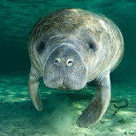

Paulo_André

Após anos, os peixes bois estão sendo considerados em extinção.
A caça intensa no período colonial dizimou populações inteiras de peixes-bois, causando sua extinção nos estados do Espírito Santo, Bahia e Sergipe. Atualmente a degradação do habitat para instalação de fazendas de camarão e salinas é apontada como a principal ameaça à conservação da espécie.
Ana_Tazi